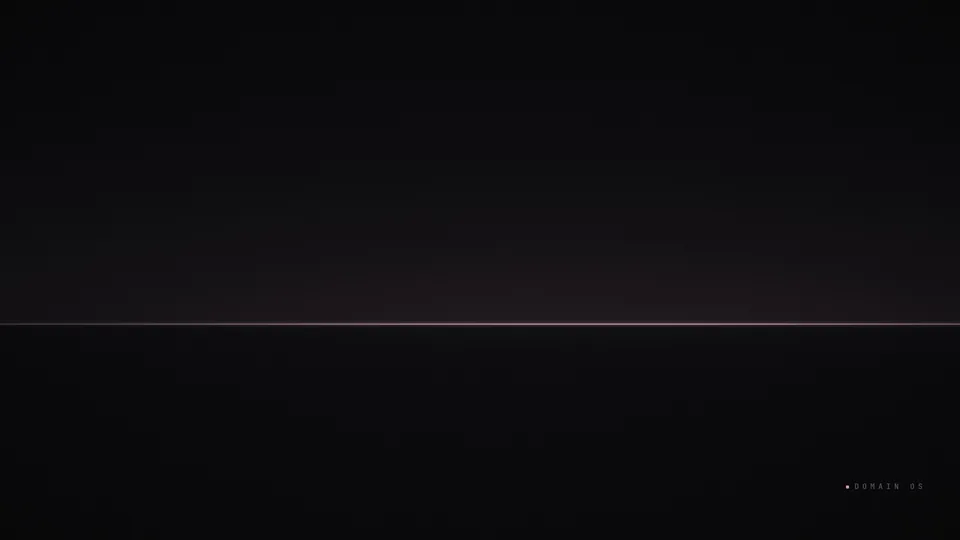

▍ Playbook for AME Wizard · Windows 11 25H2 / 26H2
Windows 11 built for games
Domain OS cleans up a fresh Windows 11 in about ten minutes: it removes apps you don't need, telemetry and ads, and sets up a power plan for games. Windows security and anti-cheats keep working, and everything can be undone.
A diagram, not a measurement. The numbers above it are facts about playbook 2.1.1.
What's new in 2.1.1
The main points in short. The full list opens with the button under each block.
- Windows 11 Pro only, 25H2 and 26H2, installs over 2.0.0
- Game Mode always on, removed apps stay removed
- The full right-click menu right away, "End task" on the taskbar
- 9 new 4K wallpapers, notifications work by default
All changes (18)
- Windows 11 Pro only. On Home and other editions the install stops at the first step, before any change.
- Supports 25H2 and 26H2. 24H2 is no longer supported: its security updates have ended.
- "No feature updates" keeps the system on 26H2 (supported until October 2028). On 25H2, Windows offers the 26H2 update: it is an ordinary update and does not break the playbook.
- Game Mode is always on. Fixed: installing the build again could turn it off.
- Xbox mode (the full-screen Xbox interface) stays off, as before.
- Removed apps no longer come back after Windows feature updates. Teams and the new Outlook no longer install themselves again.
- New Microsoft apps are removed: AI Hub, PC Manager, Microsoft 365 companions. Click to Do is off. News widgets are off.
- The full right-click menu right away (7-Zip, "Open with" and so on), without "Show more options". Undo brings back the Windows 11 menu.
- "End task" in the taskbar icon menu.
- Discord and voice chats no longer lower the game's sound.
- Error codes on the blue screen, so the cause of a crash is easier to find.
- Program Compatibility Assistant (PCA) fully off: the service, the policy and its task.
- The TrkWks service (tracks shortcuts between PCs in a network) is no longer touched: it stays Automatic, as in Windows. If an earlier version deleted it, it is put back from the saved copy and started again.
- Notifications work by default. "Turn off all notifications" is now unchecked by default.
- Drivers from Windows Update are still not installed by default (the box can be unchecked during setup).
- New wallpapers: 9 in 4K in the Domain OS style. A slideshow on the desktop (a new picture every 10 minutes) and one of them on the lock screen. More.
- Undo ("Undo Domain OS") now always reverts the Toolbox device layout, and with tool removal uninstalls Toolbox completely.
- Foreground priority (Win32PrioritySeparation) stays 0x18.
- A new interface with a live frame chart, and a new icon
- An "Optimize devices" button: press once, restart the PC
- A safe device layout with automatic undo; OBS and Discord are not quieted
- GPU overclocking behind its own flag; Windows protection stays on
All changes (15)
- New interface: its own title bar, a live frame-time chart, a core load map. The home screen charts can be turned off in settings ("Live charts on the home screen").
- New icon: the same mark as in the title bar, in the window, the taskbar, the tray and the shortcuts.
- "Optimize devices" button on the home screen: press it once (with the game closed) and restart the PC. It shows the state: "restart needed" or "active". "Put back" undoes everything.
- The Devices page shows the layout as a clear table: role, device, now → after restart.
- The device layout is safe now: storage is not touched, MSI only where the device supports it, laptops are not touched. If Windows did not start or crashed after the change, everything is reverted by itself. The old layout of earlier versions is replaced automatically at the first start.
- OBS, Discord, audio and VR software are no longer quieted in Auto mode. Game launchers are left alone too.
- Background processes get low I/O priority, so the game reads from disk first.
- GPU overclocking (NVIDIA): core, memory and voltage sliders, saved profiles, "Apply at start", "Reset to stock". Guard: if a blue screen or sudden power-off happened after an overclock, the profile is not applied at the next start. An ordinary restart does not reset the overclock.
- Overclocking stays hidden behind a feature flag. How to turn it on. Use it at your own risk.
- Toolbox has no switches that turn off Windows protection. "Protection for speed" was removed: the earlier values come back by themselves at the first start. An extra mouse setting with no effect was removed (RawMouseThrottleDuration).
- The language changes immediately, without leaving settings. Only Russian and English are in the program.
- Fixed: long captions on the home screen and long profile names are no longer cut with "…".
- No journal on screen any more. If something goes wrong, a Windows error window opens at once. During a game the tray shows a notice right away and the window opens once the game is closed. The details go to the log file
%LOCALAPPDATA%\DomainScheduler\log.txt. The "Copy report" button is gone; where the journal was, a "This system" panel shows Windows, processor, graphics card and driver, memory, display and Game Mode. - The Devices page lists every USB controller (e.g. USB 3.10 and USB 3.0). The one with the mouse, keyboard or game controller gets a core of its own.
- The font card was removed from the About page.
What to expect
Honestly, before you install.
Your FPS will not double. A playbook removes what Windows runs in the background: fewer programs start with the system, less memory is used, and nothing pops up during a game.
Smoothness in games is the Toolbox’s job. The playbook installs Domain OS Toolbox: while you play, it gives the game the best CPU cores.
It doesn't help on every PC, and laptops aren't tested yet. Installing on a laptop is at your own risk.
How it looks
Dark theme, a clean taskbar, new wallpapers and Domain OS Toolbox.
The desktop gets a slideshow of nine pictures (a new one every 10 minutes), the lock screen gets one of them. The "Domain OS" theme is in Settings → Personalization → Themes. Undo brings back the earlier pictures.





Lock screen slideshow Windows does not let programs turn it on, so do it once by hand: Settings → Personalization → Lock screen → Slideshow → Browse → C:\Windows\Web\Wallpaper\Domain OS
What Domain OS changes
Before the install the wizard shows a few pages with checkboxes. Everything not marked as your choice is always applied.
Counted from the files of playbook 2.1.1 with the default boxes. The log is an example: the wizard shows it differently.
Fewer apps
your choiceApps that come with Windows and that most players never open: Copilot, Teams, the new Outlook, Clipchamp, News, Weather, Solitaire, Tips, Phone Link, AI Hub, PC Manager, Microsoft 365 companions and others. Their tiles disappear from Start, and they do not come back after Windows feature updates. The Store, Xbox and Edge stay unless you choose to remove them too. OneDrive can be removed as well.
No telemetry
alwaysWindows sends only the minimum Microsoft requires. The telemetry service, its data collection jobs, feedback prompts, error reports, learning from what you type and Edge's extra data are switched off. No advertising ID, no suggested apps in Start, no ads on the lock screen, no Bing in Start search, no Widgets news feed, no Recall and no Click to Do.
Quieter background
alwaysError reporting, the Program Compatibility Assistant, Windows AI components and the scheduled jobs that collect and send data are switched off. All other services stay as Windows sets them: printing, Bluetooth, sync and the rest keep working. SysMain stays on: it keeps games and programs starting fast.
Indexing and hibernation
your choiceOff by default. If you never search inside files, indexing can be switched off: Start still finds programs and settings. Separate boxes switch off hibernation with Fast Startup and background work of Store apps.
Windows Update on your terms
your choiceSecurity updates always keep coming. “No feature updates” holds the system on 26H2. Drivers from Windows Update are not installed by default: you install the makers' drivers from their sites.
Games, sound and input
alwaysNo game recording, no Game Bar and no full-screen Xbox mode, no mouse acceleration (the same hand movement always moves the cursor the same distance), no Sticky Keys window when you press Shift five times. Discord and voice chats don't lower the game's sound. Windows Game Mode is always on, and hardware-accelerated GPU scheduling (HAGS) is on.
Power plan
your choice“Domain OS”: Windows' Balanced plan, in which USB devices and the graphics card's connection never go into power saving, and the screen and disk are never turned off. The processor works exactly as in Balanced. On battery it is the normal plan.
A handier Windows
your choiceDark theme, a taskbar with only the Start button, Start with only useful pins, file extensions shown. Always: the full right-click menu right away, "End task" on the taskbar, error codes on the blue screen. Administrator prompts are removed; UAC itself stays on. Notifications work; a box turns them off.
Tools and wallpapers
your choiceDomain OS Toolbox 1.14.1, Visual C++ and DirectX for games, 7-Zip, 9 wallpapers in 4K, and after the restart a guide with the drivers for your PC from the makers' official sites.
What stays as it is
Protection and everything games and anti-cheats rely on.
- Microsoft Defender and SmartScreen
- Security updates
- Memory integrity, Secure Boot, TPM
- UAC
- FACEIT
- Vanguard
- Easy Anti-Cheat
- BattlEye
- Microsoft Store and Xbox services
- The Xbox app (the Game Bar overlay is off)
- Sound, network, devices
- Edge and WebView2 that launchers need
Changed your mind? Undo it
Before the first change the playbook writes down how everything was.
Put it back
Start → Domain OS → Undo Domain OS, then restart. Settings, services, jobs, the power plan, the wallpapers and the Toolbox device layout come back as they were. Removed apps are not reinstalled automatically: you get their list and install the ones you want from the Microsoft Store. If you also choose to remove the tools, Toolbox is uninstalled completely.
Upgrading from 2.0.0
Just install 2.1.1 over it in AME Wizard: nothing has to be undone first. Undo still returns Windows to the state before the very first install.
Install
About 10 minutes. If you are unsure, try it in a virtual machine first.
Open the step-by-step guide from scratch: from downloading the official Windows 11 Pro to the first game, with common mistakes and a check. Below is the short version for those who have done it before.
- Install a clean Windows 11 Pro, version 25H2 or 26H2 (on Home the install does not start). Before connecting to the internet, run No-WU-Drivers.reg, so Windows does not install its own drivers.
- Install the updates in Windows Update and restart.
- Download AME Wizard, drag
Domain-OS-2.1.1.apbxinto it, check the boxes (table below) and start. You need internet, and plug in your laptop if you use one. - Restart. A guide with drivers for your PC opens: install them from top to bottom.
Install 2.1.1 over it in AME Wizard, as in step 3. Nothing has to be undone first.
Boxes in the wizard: 19, 14 on by default
Important: "No drivers from Windows Update" is checked by default, "Turn off all notifications" is unchecked by default.
| Box in the wizard | Default |
|---|---|
| Install the Domain OS app and start it with WindowsDomain OS Toolbox, starts with Windows | on |
| Install Visual C++, DirectX runtime and 7-ZipGame runtimes and 7-Zip | on |
| Show the driver guide after the restartDriver guide after the restart | on |
| Domain OS wallpapers (desktop slideshow + lock screen)Wallpapers: slideshow and lock screen | on |
| Stay on the installed version (no feature updates)No feature updates (holds 26H2) | on |
| No drivers from Windows UpdateNo drivers from Windows Update | on |
| Clean taskbar: only the Start button, no pinsClean taskbar | on |
| Dark theme for Windows and appsDark theme | on |
| Turn off all notificationsTurn off all notifications | off |
| Administrator rights without the UAC promptAdmin rights without the UAC window (UAC itself stays) | on |
| Remove preinstalled apps (news, Teams, Copilot, ...)Remove preinstalled apps | on |
| Remove OneDriveRemove OneDrive (your files stay) | on |
| Maximum: also Store, Xbox app, Photos, CameraAlso the Store, Xbox, Photos, Camera | off |
| Unused jobs off, Edge does not stay in the backgroundUnused jobs off, Edge not in the background | on |
| Switch off file indexing (file search gets slow)Switch off file indexing | off |
| Domain OS power plan: Balanced, no USB and PCIe power savingDomain OS power plan | on |
| Hardware-accelerated GPU scheduling (HAGS), after a restartHardware-accelerated GPU scheduling | on |
| Switch off hibernation and Fast StartupSwitch off hibernation and Fast Startup | off |
| Store apps do not run in the backgroundStore apps not in the background | off |
After installing, don't apply third-party tweaks or “optimizers”. Domain OS changes only what is described on this page, breaks nothing, and everything can be undone. Third-party tweaks change the system without a description and without an undo.
If you applied third-party tweaks after Domain OS, support on Discord is not for you: we can't tell what broke or why. Put the system back to its original state first.
Which Windows
Windows 11 Pro only, versions 25H2 and 26H2: on Home and other editions the install stops at the first step, before any change. 24H2 is no longer supported: Microsoft no longer issues security updates for it.
| Version | Domain OS 2.1.1 | Updates for security |
|---|---|---|
| 26H2 | supported | until October 2028 |
| 25H2 | supported | until October 2027 |
| 24H2 | not supported | ended in October 2026 |
The "No feature updates" box holds the system on 26H2. On 25H2, Windows offers the 26H2 update: it is an ordinary update and does not break the playbook. On 24H2, AME Wizard will not start the install: update Windows in Windows Update first. Dates from Microsoft.
Download
A test build. AME Wizard will say the playbook is not verified: that check is done by the AME team and comes later.
- file
- Domain-OS-2.1.1.apbx · 78.4 MB
- sha-256
- c4ec93879d236b6a328c3cda1e00a7493452dde4e969a9159d9981035f38ba1c
- check
- Get-FileHash .\Domain-OS-2.1.1.apbx
- system
- Windows 11 Pro · 25H2 and 26H2
- inside
- Domain OS Toolbox 1.14.1
- needs
- AME Wizard, internet, power cable